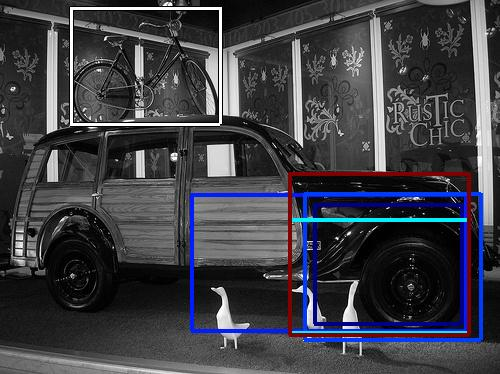
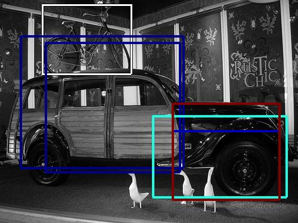
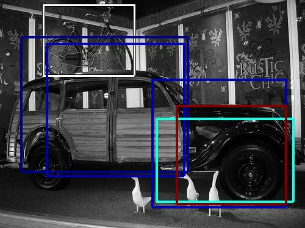

0.558416

0.571025

0.612227

0.625037

0.666952

0.671450

0.693197

0.699705

0.703458

0.706712
| Target image | 0.558416 | 0.571025 | 0.612227 | 0.625037 | 0.666952 | 0.671450 | 0.693197 | 0.699705 | 0.703458 | 0.706712 |
Target image |  3602.300293 |  3336.444824 |  1934.630737 |  1689.703613 |  1633.255127 |  1629.799194 |  1626.475098 |  1347.151855 |  1314.685059 |  1264.369019 |
| Target image  |  8162.012207 |  6156.187500 |  5337.408203 |  5109.780762 |  4965.989746 |  4597.063477 |  4477.992676 |  3979.930908 |  3921.927979 |  3726.392090 |
| Target image  |  6669.615234 |  5944.366211 |  5713.253418 |  5698.177246 |  4863.789062 |  4666.509766 |  4125.359863 |  4016.030762 |  3988.646240 |  3821.785645 |
| Target image  |  5863.660156 |  5634.938477 |  5034.013672 |  4878.912598 |  4783.133789 |  4298.134277 |  4262.734375 |  4005.151855 |  3964.995117 |  3843.025391 |